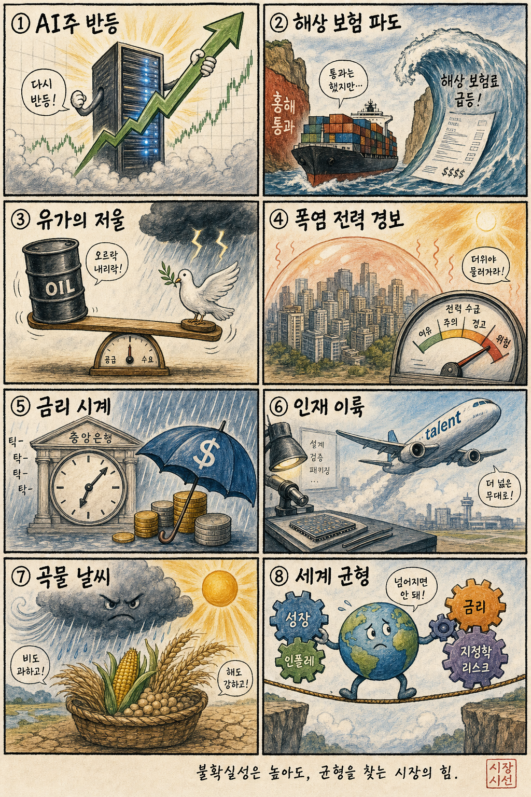
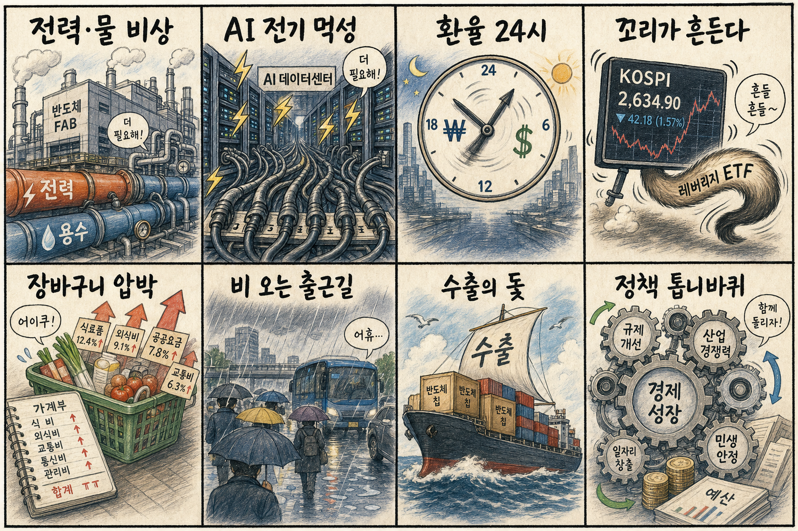

미국 증시 마감과 한국 증시 영향
직전 미국장 보도 확인뉴욕증시, 반도체 반등에 상승 마감…나스닥 1.12%↑; 뉴욕증시, AI주 반등에 일제히 '상승'…다우 사상 첫 5만3000 돌파. 한국장에는 AI·반도체 위험선호 회복, 전력 인프라 병목, 환율 변동, 중동·홍해 물류 리스크가 함께 반영될 수 있습니다.
핵심 요약 카드 4개
오늘 장 전 의사결정용① AI주 반등미국장 기술주 회복이 국내 반도체 심리에 우호적입니다.
② 전력 인프라AI 데이터센터 수요가 전력기기·전선·냉각으로 확산됩니다.
③ 반도체 수급실적 대기와 레버리지 ETF 변동성을 함께 관리해야 합니다.
④ 지정학 비용홍해·중동 뉴스는 유가·해운·방산 심리를 자극합니다.
📈 어제 연결 아이디어 3건 — 전일 정규장 등락률
네이버페이 증권 일별시세 확인 · 계산 도구 사용| 종목 | 코드 | 종가 비교 | 기준 거래일 | 등락률 | 출처 |
|---|
| SK하이닉스 | 000660.KS | 2026.07.03 2,425,000원 → 2026.07.06 2,343,000원 | 2026.07.06 | -3.38% | 출처보기 |
| HD현대일렉트릭 | 267260.KS | 2026.07.03 945,000원 → 2026.07.06 929,000원 | 2026.07.06 | -1.69% | 출처보기 |
| 대한전선 | 001440.KS | 2026.07.03 32,900원 → 2026.07.06 32,250원 | 2026.07.06 | -1.98% | 출처보기 |
주요 지수
- 다우: AI주 반등 보도 속 위험선호 회복을 확인합니다.
- S&P500: 대형 기술주와 전력·유틸리티 비용 변수가 함께 작동합니다.
- 나스닥: 반도체와 AI 인프라가 한국 성장주 심리의 직접 변수입니다.
강세/약세 섹터
- 강세 후보: 반도체, HBM, 전력기기, 전선, 데이터센터, 방산.
- 약세 경계: 고환율 비용 부담 내수주, 물류비 민감주, 과열 레버리지 테마.
- 변동성: 삼성전자 실적 대기와 원·달러 야간 거래 적응 구간.
전날 급등/폭락 주요 미국 주식과 원인
확인 가능 범위 기준- AI·반도체: 미국장 반도체 반등 보도가 확인돼 엔비디아·AI 서버 밸류체인 관심이 이어졌습니다.
- 전력·유틸리티: AI 데이터센터의 전력 수요와 폭염 이슈가 전력망 투자 기대를 유지합니다.
- 에너지·해운: 중동·홍해 변수는 유가와 운임 민감 업종의 변동 요인입니다.
오늘 한국 증시 영향
장전 체크반도체미국 AI주 반등과 국내 실적 대기 수급이 맞물립니다.
전력 인프라데이터센터 전력 병목이 변압기·전선·냉각 수요로 확산됩니다.
환율24시간 외환거래 적응 과정에서 야간 변동과 외국인 수급을 봐야 합니다.
지정학홍해·중동 뉴스는 방산·해운·정유와 항공·여행에 엇갈립니다.
🔗 오늘 연결 아이디어 3건
투자권유 아님 · 단기 관찰 리스트관찰 아이디어SK하이닉스 000660.KS
관련 테마AI 메모리·HBM·미국 AI주 반등
연결 이유미국 AI주 반등과 메모리 가격 방어 흐름은 HBM 중심 수익성 기대와 연결됩니다.
단기 확인 포인트외국인 순매수, HBM 가격 코멘트, 전일 급락 후 거래대금 회복
관찰 아이디어HD현대일렉트릭 267260.KS
관련 테마AI 데이터센터 전력·변압기
연결 이유AI 데이터센터의 전력 병목은 초고압 변압기 수요와 직접 연결됩니다.
단기 확인 포인트국내외 수주 공시, 전력망 정책 발언, 전일 조정 이후 수급
관찰 아이디어대한전선 001440.KS
관련 테마전력망·반도체 클러스터·데이터센터
연결 이유반도체 클러스터와 데이터센터 증설은 초고압 케이블과 송전망 수요 기대를 키웁니다.
단기 확인 포인트전력망 발주 일정, 구리 가격, 환율과 해외 수주 뉴스
오늘 체크 이벤트
오전 기준미국장AI주 반등 지속 여부와 반도체 선물 흐름
실적삼성전자 잠정 실적 관련 컨센서스 변화
환율원·달러 24시간 거래 첫 주 스프레드와 외국인 반응
해외홍해 물류, 중동 발언, 전력·폭염 뉴스
🤖 AI·테크 핵심 소식
반도체·생성형AI·AI칩·데이터센터·전력- 오늘 AI·테크의 핵심은 미국 AI주 반등, 메모리 가격 방어, 데이터센터 전력 병목입니다.
- 한국장에서는 반도체 대형주와 전력 인프라 밸류체인을 분리해 봐야 합니다.
AI·테크 주요 뉴스 5개
내용요약 → 예상여파 → 기사/영상01
반도체·AI
“싸게 팔 이유 없다”는 CXMT의 반전… AI 호황에 사라진 ‘중국발 저가 공세’ - 조선비즈 - Chosunbiz
Chosunbiz · 06:02 KST
내용요약 AI 수요가 메모리 가격 협상력으로 연결되며 중국 메모리 업체도 저가 공세보다 가격 방어를 택한다는 흐름이 확인됩니다. 당일 AI 뉴스 RSS가 제한돼 전일 확인 기사까지 보수적으로 반영했습니다.
예상여파 삼성전자·SK하이닉스의 고부가 메모리 기대에는 우호적이나, 중국 기술 추격 속도와 공급 재개 가능성은 계속 확인해야 합니다.
02
AI 데이터센터
SKT “2035년까지 최대 15GW 규모 AI 데이터센터 조성” - 동아일보
동아일보 · 00:30 KST
내용요약 AI 데이터센터 투자가 GPU 확보를 넘어 전력·부지·허가 경쟁으로 확대되고 있습니다. 대형 통신·인프라 기업의 장기 투자 계획이 전력망 수요를 자극합니다.
예상여파 전력기기·전선·냉각·건설·데이터센터 운용 기업에는 중장기 수주 기대가 남고, 인허가 지연은 속도 조절 요인입니다.
03
전력 병목
AI 데이터센터, 이제는 ‘전력·허가’가 승부 가른다 - 글로벌이코노믹
글로벌이코노믹 · 04:05 KST
내용요약 AI 인프라 경쟁의 병목이 전력과 허가로 이동했다는 점이 반복 확인됩니다. 서버 증설이 실제 매출로 이어지려면 전력망과 냉각 설비가 먼저 따라와야 합니다.
예상여파 AI 수혜 범위가 반도체에서 변압기·전선·전력망·냉각으로 넓어질 수 있습니다.
04
AI칩
퀄컴(QCOM), 메타 손잡고 서버 칩 시장 지각변동 예고...엔비디아·인텔 넘볼까 - 코인리더스
코인리더스 · 05:00 KST
내용요약 빅테크가 맞춤형 서버칩과 추론용 AI칩 선택지를 넓히며 엔비디아 중심 구조를 견제하고 있습니다. 칩 다변화는 메모리·기판·패키징 수요의 질을 바꿀 수 있습니다.
예상여파 국내 HBM·패키징·기판 밸류체인은 칩 고객 다변화의 수혜를 받을 수 있으나, 단일 대장주 프리미엄은 흔들릴 수 있습니다.
05
AI 에너지
AI 전기·물 부족 해법 되나…소형 원자로와 엔비디아 냉각기술이 만났다 - 에너지안전신문
에너지안전신문 · 01:13 KST
내용요약 AI 데이터센터의 전기와 냉각수 부족 문제가 에너지 기술과 직접 연결되고 있습니다. 원전·냉각·수처리 솔루션이 AI 인프라 의제로 부상했습니다.
예상여파 원전·전력·수처리 테마에는 관심이 유지되지만, 상용화 일정과 규제 확인 전 과열은 경계해야 합니다.
🌍 세계뉴스 보고
KST 확인 가능 기사 중심- 세계뉴스는 미국 AI주 반등, 중동·홍해 물류 리스크, 폭염·전력 수요로 압축됩니다.
- 시장 연결은 반도체 위험선호, 유가·해운비, 전력망 투자입니다.
세계 주요 뉴스 5개
내용요약 → 예상여파 → 기사/영상01
미국장
뉴욕증시, 반도체 반등에 상승 마감…나스닥 1.12%↑ - 뉴스핌
뉴스핌 · 05:25 KST
내용요약 직전 미국장은 반도체와 AI주 반등을 중심으로 상승했다는 국내 보도가 확인됩니다. 한국 아침 기준으로 기술주 위험선호가 반도체 대형주 심리에 우호적으로 작용할 수 있습니다.
예상여파 국내 반도체·AI 인프라 종목에는 장초반 온기가 유입될 수 있으나, 전일 급등 종목은 차익매물도 함께 봐야 합니다.
02
AI주
뉴욕증시, AI주 반등에 일제히 '상승'…다우 사상 첫 5만3000 돌파 - 뉴스웍스
뉴스웍스 · 05:57 KST
내용요약 AI 관련주 반등이 미국 지수 상승을 견인했다는 보도입니다. 성장주 심리가 회복되면 한국 시장에서도 HBM·전력·데이터센터 테마가 재부각될 가능성이 있습니다.
예상여파 AI 테마 확산은 긍정적이지만 밸류에이션 부담과 금리 뉴스가 동시에 작동할 수 있습니다.
03
중동
이란, 美건국행사 맞춰 하메네이 장례식… 곳곳서 “복수를” - 동아일보
동아일보 · 04:30 KST
내용요약 중동 긴장은 휴전 국면에서도 정치 메시지와 대중 정서로 재점화될 수 있습니다. 유가와 해운 리스크가 한국 수입물가에 연결되는 구조입니다.
예상여파 정유·방산·해운에는 위험 프리미엄이 붙을 수 있고, 항공·여행·화학에는 비용 부담이 될 수 있습니다.
04
홍해 물류
영국군 "예멘 홍해서 화물선, 무장 세력에 피격" - 연합뉴스TV
연합뉴스TV · 05:34 KST
내용요약 홍해 인근 화물선 피격 보도는 해상 물류 안정성이 아직 취약하다는 신호입니다. 운임·보험료·우회 항로 비용이 수출기업의 변수가 됩니다.
예상여파 국내 수출기업은 납기와 물류비를 점검해야 하며, 해운주는 단기 변동성이 커질 수 있습니다.
05
기후·전력
미 폭염으로 최소 25명 사망…열돔 물러나자 이번엔 폭풍우 - 연합뉴스TV
연합뉴스TV · 05:52 KST
내용요약 미국 폭염 보도는 전력 수요와 기후 리스크가 시장 변수로 남아 있음을 보여줍니다. 냉방 수요와 전력망 투자 논의가 함께 커질 수 있습니다.
예상여파 전력·유틸리티·냉각 관련 수요에는 우호적이나, 농산물·보험·물류 비용 변동에는 부담입니다.
🌍 세계 뉴스 8컷 만평
손그림 2×4 만화판 · 실제 인물·로고 없음
이미지 생성 자산을 우선 표시하고, 로딩 실패 시 CSS 손그림풍 패널이 보이도록 구성했습니다.
🇰🇷 국내뉴스 보고
KST 확인 가능 기사 중심- 국내 이슈는 반도체 클러스터 인프라, 대형 반도체 수급, 24시간 외환거래, 실적 대기입니다.
- 정책 기대와 레버리지 변동성을 동시에 관리해야 합니다.
국내 주요 뉴스 5개
내용요약 → 예상여파 → 기사/영상01
반도체 정책
[단독]강훈식 “추가세수, 반도체 클러스터 전력-용수에 써야” - 동아일보
동아일보 · 04:30 KST
내용요약 반도체 클러스터 경쟁력이 생산라인뿐 아니라 전력·용수 기반시설에 달렸다는 정책 메시지가 확인됩니다. 예산과 인프라 속도가 산업 경쟁력의 핵심 변수입니다.
예상여파 전력기기·수처리·건설·송배전 관련주에는 정책 기대가 붙을 수 있고, 실제 예산 배정과 발주 일정이 중요합니다.
02
메가 프로젝트
李대통령, 반도체 클러스터 점검회의 주재…3대 메가 프로젝트 ‘속도전’ - 동아일보
동아일보 · 05:42 KST
내용요약 반도체 클러스터와 3대 메가 프로젝트 점검은 정부 주도 산업 인프라 집행 속도를 보여주는 이슈입니다. 장전에는 소부장과 인프라 종목 수급이 민감해질 수 있습니다.
예상여파 삼성전자·SK하이닉스 주변 소부장과 전력·용수 인프라 기업에 관심이 몰릴 수 있습니다.
03
시장 수급
코스피 뒤흔든 ‘삼전닉스 레버리지’ 경고음…당국, 대책 마련 고심 - 한겨레
한겨레 · 05:00 KST
내용요약 삼성전자·SK하이닉스 레버리지 상품이 코스피 변동성을 키운다는 경고가 나왔습니다. 대형 반도체 쏠림이 지수 체감 변동을 확대하는 구조입니다.
예상여파 반도체 대형주의 장중 등락이 ETF 수급을 통해 커질 수 있어 추격매수보다 거래대금과 괴리율 확인이 필요합니다.
04
외환시장
24시간 외환시장 열린다…환율 안정 시험대 - 연합뉴스TV
연합뉴스TV · 05:28 KST
내용요약 원·달러 24시간 거래 체제가 시작되며 야간 변동 흡수와 외국인 환전 편의가 동시에 시험대에 오릅니다. 첫 주에는 호가와 스프레드 확인이 중요합니다.
예상여파 수출기업에는 환헤지 선택지가 늘지만, 원화 변동성이 커질 경우 외국인 수급과 내수 비용 부담이 달라질 수 있습니다.
05
실적 대기
삼성전자 2분기 실적 개봉 박두…‘널뛰기’ 코스피 잠재울까 - v.daum.net
v.daum.net · 05:41 KST
내용요약 삼성전자 2분기 잠정 실적을 앞두고 대형 반도체 수급이 시장 방향을 좌우하는 구간입니다. 기대치와 실제 발표치의 차이가 단기 흐름을 결정합니다.
예상여파 실적이 기대를 웃돌면 소부장으로 온기가 확산될 수 있고, 실망 시 레버리지 수급 청산이 변동성을 키울 수 있습니다.
🇰🇷 국내 뉴스 8컷 만평
손그림 2×4 만화판 · 한국시장 이슈 상징화
이미지 생성 자산을 우선 표시하고, 로딩 실패 시 CSS 손그림풍 패널이 보이도록 구성했습니다.